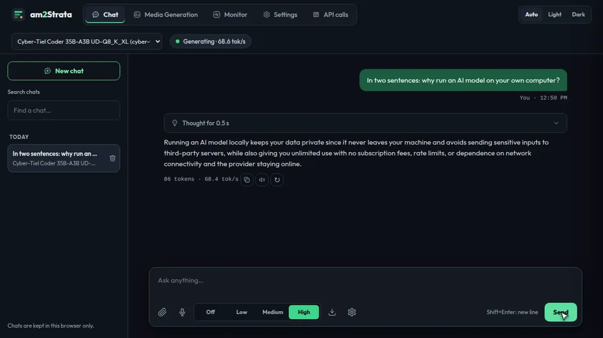
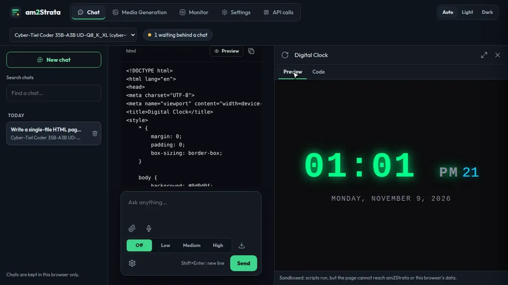
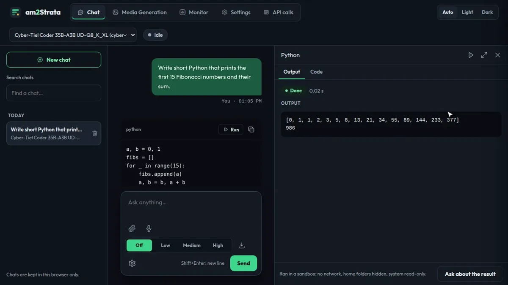
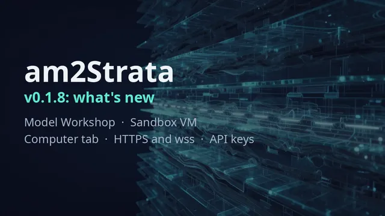
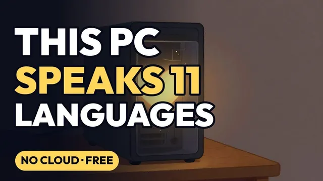
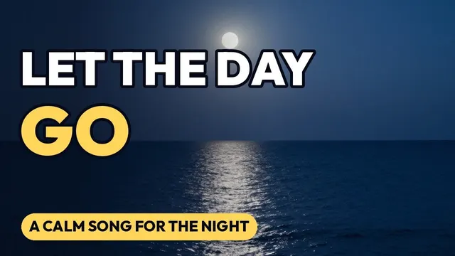

See it
Real screenshots of the web app, running on one PC.





The Workshop and Computer tabs are newer than these screenshots.
An AI server you run on your own PC. Chat with local models, plug in the apps you already use, make your own models, and let an agent work in a sandbox computer of its own.
One server on your machine, one address for every app. Your models, your data and your keys stay with you.
OpenAI, Anthropic, Responses and Gemini-compatible endpoints, streaming and tools included, so existing apps and coding agents connect with just a base URL and a key.
Chat with a live canvas for HTML, diagrams and Python in a sandbox; a Monitor for speed, GPUs and the queue; settings for everything else.
Convert a Hugging Face model to GGUF, quantize it, merge a LoRA adapter, and install the result. Fine-tune with LoRA, sized to the machine you have.
Turn your documents into a chat dataset written by the model you have loaded, with near-duplicates dropped, an optional judge pass and a dataset card. Review and edit it record by record.
Computer use in its own small Debian virtual machine: the agent installs and runs what it needs inside, and your PC is untouched. It pauses when idle and resumes in about a second.
Watch the agent's desktop live, take control with your own mouse and keyboard, and copy and paste across. Rules you choose decide what it may do.
HTTPS and secure WebSockets with a self-signed, your own or a Tailscale certificate. API keys with limits and expiry, and usage per key and per model.
The web app talks to the server over one WebSocket: answers stream over it, and status, the queue and jobs are pushed the moment they change.
Songs that sing their lyrics in 50+ languages, voices, images, video and speech to text, all running on your own GPU.
Real screenshots of the web app, running on one PC.



The Workshop and Computer tabs are newer than these screenshots.
Demos recorded live on one PC, and music, pictures and voices made with am2Strata itself. They open on YouTube.

5:16 am2Strata v0.1.8: Model Workshop, Sandbox VM, HTTPS and API KeysWhat's new since v0.1.4: the Workshop, the sandbox VM and Computer tab, HTTPS and secure WebSockets, API keys, one live channel. 9:59
Run AI on Your Own PC: the 10-minute tourInstall, chat, canvas, Python, memory, web search, images, voice, coding agents, three APIs and the Monitor.
9:59
Run AI on Your Own PC: the 10-minute tourInstall, chat, canvas, Python, memory, web search, images, voice, coding agents, three APIs and the Monitor.

8:50 This Home PC Speaks 11 Languages, Writes Code and PaintsVoices in eleven languages, code and pictures, all on one PC with no cloud. 4:06
Songs That Sing Your Lyrics (v0.1.4)Songs that follow their lyrics, native voices, MCP tool servers from the app, and the server's tools for every app.
4:06
Songs That Sing Your Lyrics (v0.1.4)Songs that follow their lyrics, native voices, MCP tool servers from the app, and the server's tools for every app.
 2:31
The Moon Woman Singing to MavenA cinematic ballad sung across the empty space to Earth.
2:31
The Moon Woman Singing to MavenA cinematic ballad sung across the empty space to Earth.
 58:45
Lofi for Coding: 1 Hour of Deep FocusTwenty original instrumental tracks for programming and study.
58:45
Lofi for Coding: 1 Hour of Deep FocusTwenty original instrumental tracks for programming and study.

2:51 Moonlight on the SeaA slow, calm song to let the day go. 2:31
Little Moon, GoodnightA gentle lullaby for sleep.
2:31
Little Moon, GoodnightA gentle lullaby for sleep.
 3:22
Peace and HarmonyA calm song about kindness and living as one.
3:22
Peace and HarmonyA calm song about kindness and living as one.
 0:58
The Moon Woman Singing to Maven (Short)The ballad's chorus, vertical.
0:58
The Moon Woman Singing to Maven (Short)The ballad's chorus, vertical.
More on the channel: am2Strata on YouTube.
The installer picks the right download for your system and processor, checks its SHA-256, needs no admin rights, and keeps your models and settings when you update.
Pull a small one to start:am2strata pull mistralai/Ministral-3-3B-Instruct-2512-GGUF Q4_K_M
Run am2strata and open http://127.0.0.1:8000 in your browser.
am2strata-run doctor lists each optional feature and exactly what this machine still needs for it.
Six downloads. The server, the web app, the APIs and the Workshop work on all of them.
| Linux x64 | Linux Arm | macOS Apple silicon | macOS Intel | Windows x64 | Windows Arm | |
|---|---|---|---|---|---|---|
| Server, web app, APIs, Workshop | yes | yes | yes | yes | yes | yes |
| Rust engine | CPU or GPU | CPU | CPU or GPU | CPU | CPU or GPU | CPU |
| Computer tab | yes | yes | – | – | – | – |
| Sandbox VM | yes (KVM) | – | – | – | – | – |
| Start at sign-in | systemd | systemd | launchd | launchd | Startup | Startup |